Real-Time Shadows
Recap: Shadow Mapping
先来简单回顾一下阴影映射(shadow mapping)的原理。
-
它是一种两趟(2-pass)算法
-
第一趟：从光源位置出发看向场景，生成阴影贴图（SM），即来自光源的「深度纹理」

-
第二趟：从相机位置出发渲染场景，根据 SM 确定场景中任何一点是否在阴影中
-
从眼睛（相机）处渲染标准图像
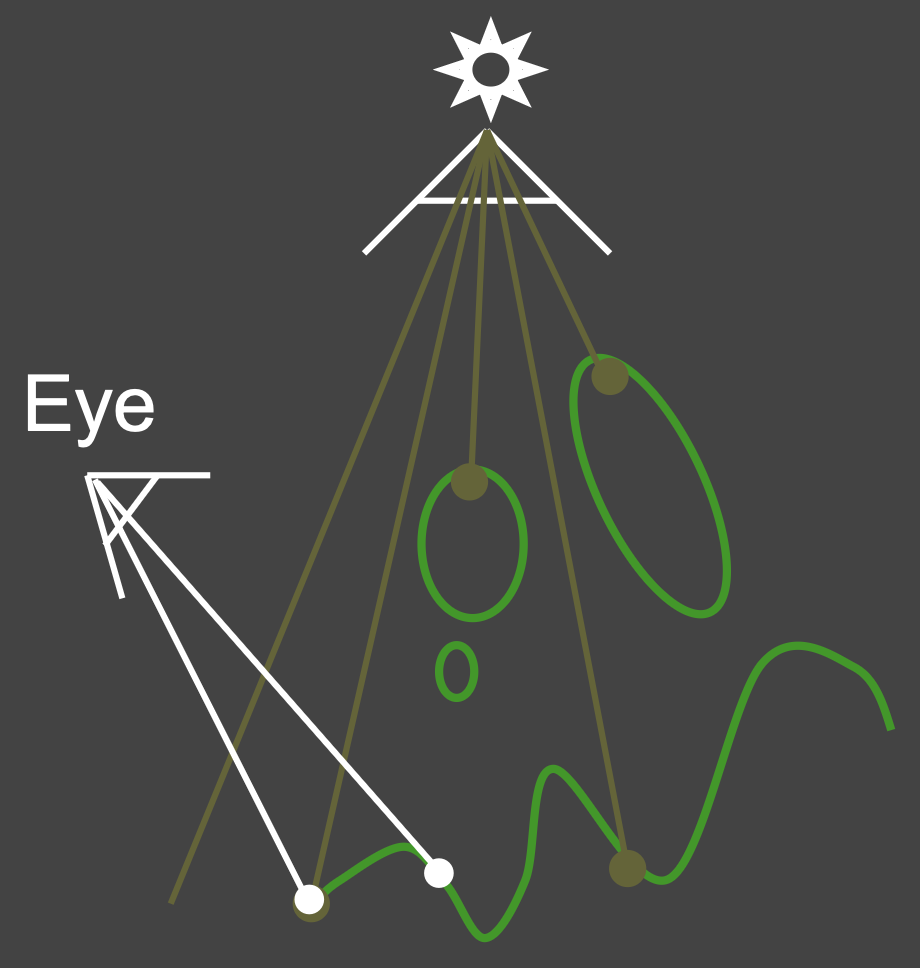
-
重投影：将眼睛视角下的可见点投影回光源 >注：深度值既可以用 z 值（投影变换后），也可以用顶点间的实际距离，选择其一即可。
-
若某一点的深度对于眼睛与光源是相同的，说明该点是可见的(visible)
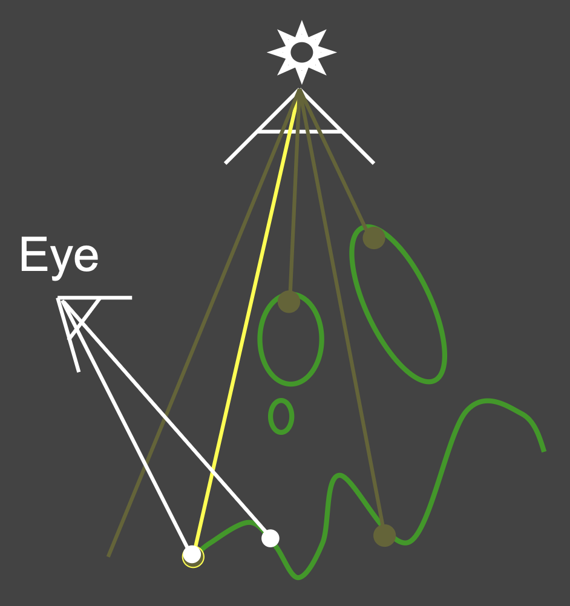
-
否则说明该点是被阻挡的(blocked)

-
-
-
-
它也是一种图像空间算法
- 优点：无需了解场景的几何属性
- 缺点：导致自遮挡(self occlusion)和走样(aliasing)问题
-
它还是一种知名的阴影渲染技术
- 甚至用在早期的离线渲染中，比如在动画电影《玩具总动员》
下面展示了阴影映射的结果，可以看到即便在相当复杂的场景（主要指遮挡关系复杂）中也能取得不错的效果。
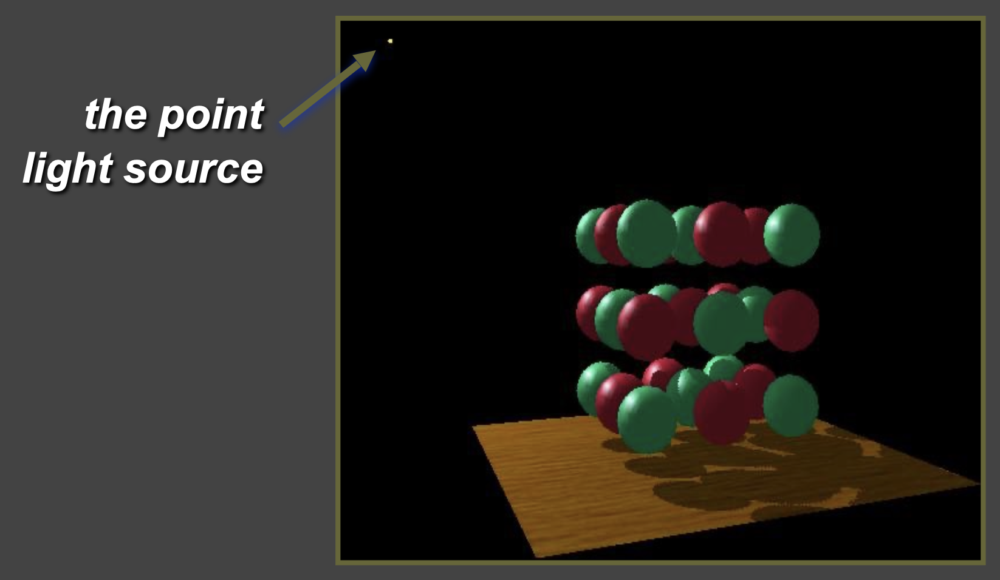
比较有阴影和无阴影的结果。很明显，有了阴影后，整个场景的空间感就更加真实了。
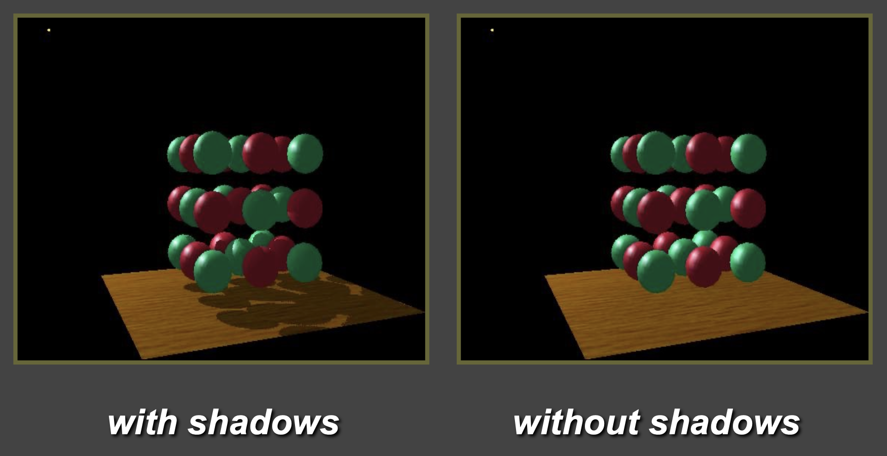
以上面的渲染结果为例，我们来感受一下更直观的阴影映射的过程：
-
光源视角下的场景

-
光源视角下的深度缓冲区
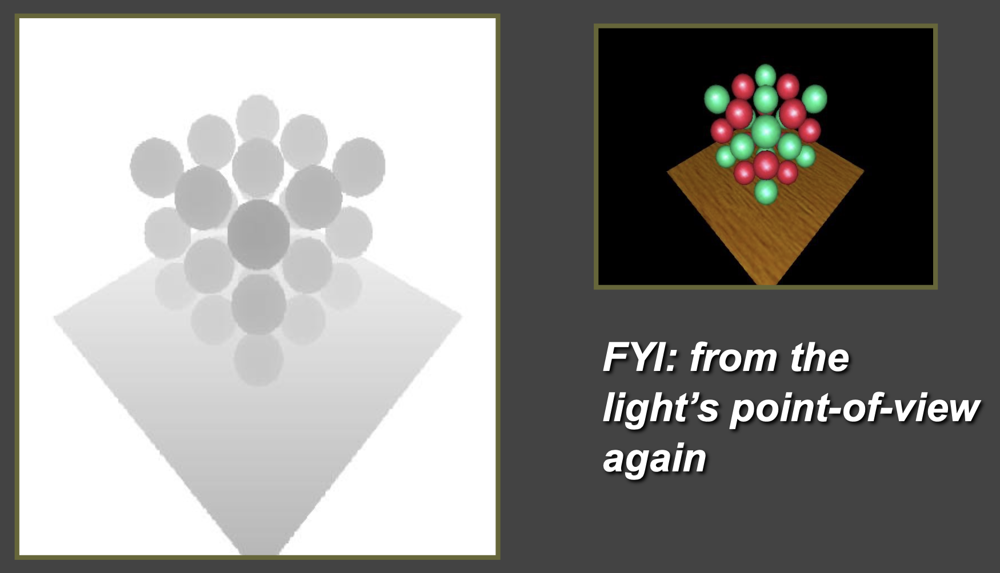
-
将深度图投影到眼睛的视角中
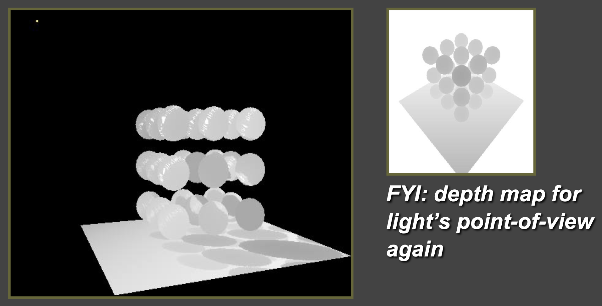
-
带阴影的场景
- 高光部分不会出现在阴影中
- 注意曲面如何相互投射阴影
阴影映射的问题
- 左图中虽然人物的阴影是正常的，但是地面上却有一圈圈的纹路。这并非摩尔纹（即不是采样问题），而是由数值精度导致的问题。
- 来看右边的示意图，光源照射场景后会得到图中用红色线条标出的阴影贴图，它是离散的，且每个点的深度即为光源到该点的距离。
- 现在从眼睛处看向某一点，然后取该点和光源的连线（蓝色虚线）。但由于数值精度问题，实际上该点的深度位于橙色线条标记的地方，也就是说光源对应的深度实际上会更浅。这就导致了橙色线条处的地板「挡住了」该点，误以为该点处在阴影中。
- 掠射角(grazing angle)越大，该问题越严重（所以垂直照射时问题最小）。

解决方案有：
-
增加一个偏移量(bias)，即要求当 SM 存储的深度比眼睛看到的深度明显更小时才算做被阻挡
- 还可以根据光线与表面之间的角度来动态调整偏移量大小，比如垂直照射时偏移量设置得小一些
- 但会引入分离(detach)的阴影（又称彼得潘效应(Peter Panning)）问题（因为偏移量设置过大）

-
第二深度阴影映射
- 使用 SM 中最小和次小深度的中点
- 问题：要求物体必须是密闭的，且开销过大
- 即便对于复杂度的影响不大，但「实时渲染不相信复杂度」，它只相信绝对的速度（所以常数也是很重要的）

阴影贴图的分辨率有限，如果分辨率不够大，很容易出现锯齿状的阴影。

解决方案有：
- 级联阴影映射(cascaded shadow mapping)：为阴影贴图的不同位置设置不同分辨率，在工业界中得到应用
- 动态分辨率的阴影贴图
The Math Behind Shadow Mapping
微积分中有很多有用的不等式，这里就列举其中两个对实时渲染计算有帮助的不等式：
-
施瓦兹(Schwarz)不等式
\[ \left[\int_a^b f(x)g(x) dx\right]^2 \le \int_a^b f^2(x) dx \cdot \int_a^b g^2(x) dx \] -
闵可夫斯基(Minkowski)不等式
\[ \left[\int_a^b [f(x) + g(x)]^2 dx\right]^{\frac{1}{2}} \le \left[\int_a^b f^2(x) dx\right]^{\frac{1}{2}} + \left[\int_a^b g^2(x) dx \right]^{\frac{1}{2}} \]
之所以要用到这些不等式，不是因为我们关心不等，而是关心近似相等，所以会将上述不等式中的不等号看作约等号。所以下面给出在实时渲染中很重要的一个近似等式：
上述式子将乘积的积分拆分为积分的乘积。约等号右边的分母看起来是空的，实际上起到了归一化常数的作用，确保数量级不变。当满足以下两个条件时，可认为这个式子是准确的：
- \(g(x)\) 的积分区间(support)（即 \(\Omega\)）很小时
- \(g(x)\) 足够光滑，也就是说在积分区间中 \(g(x)\) 的变化不要太剧烈
这两个条件在渲染方程中均得到满足。先来回顾原方程内容：
利用上述近似公式，将其拆成两部分乘积（可见性（对应阴影映射）* 着色）：
- 积分区间小：点光源（甚至不需要积分）+ 直接光照
- 光滑：物体是漫反射 BRDF（高光部分就不满足这一点）+ 恒定辐射区域光照（面光源，光照是均匀的）
注：这一近似公式在环境光遮蔽(ambient occlusion)中也得到应用，之后再介绍。
Percentage Closer Soft Shadows
通过前面介绍的阴影映射方法，虽然能得到阴影，但得到是硬阴影(hard shadow)，即有明确边界的阴影。我们更希望得到的是软阴影(soft shadow)的效果，也就是说没有明确的阴影边界，这样看上去会更自然。

因为世界上的绝大多数光源都是面光源而非点光源，比如太阳对地球而言就是面光源。假如月球正好居于地球和太阳之间，那么月球的阴影就会打在地球表面。阴影有本影(umbra)和半影(penumbra)之分，其中半影对应区域是只有部分区域被遮挡的地方，作为阴影与无阴影区域间的过渡。
为了实现软阴影的效果，在实时渲染中常用到的一种工具叫做百分比渐进滤波(percentage closer filtering, PCF)。
-
该技术最初是为了实现阴影边缘的反走样
- 而不是为了实现软阴影效果（也就是后面介绍的 PCSS）
- 对阴影比较结果（对于任意一点，在阴影中记为0，否则记为1）进行滤波(filtering)（模糊）
-
不直接对阴影贴图做滤波的原因：
- （第一趟中）这样的纹理滤波仅对颜色分量计算平均值，这导致先会得到一个模糊的阴影贴图（比如把物体本身边缘给模糊掉了）
- （第二趟中）而计算深度值平均值后再进行比较，则仍然得到的是二元可见性（硬阴影），并没有起到模糊阴影的效果

- 正确的做法是：
- 为每个片元执行多次（比如 7x7）深度比较
- 然后计算比较结果的均值
-
例子：对于右图地板上的 P 点
- 和黑方框周围的所有像素比较，比如 3x3
-
获取比较值，比如
1, 0, 1, 1, 0, 1, 1, 1, 0,
-
取均值，计算可见性，比如 0.667
例子
注意，效果是阴影的反走样而非生成软阴影。
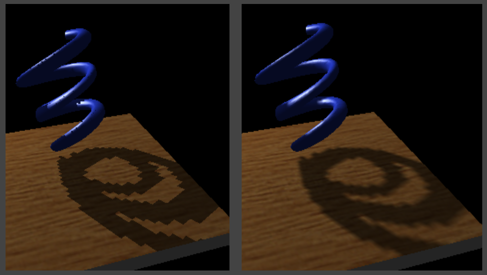
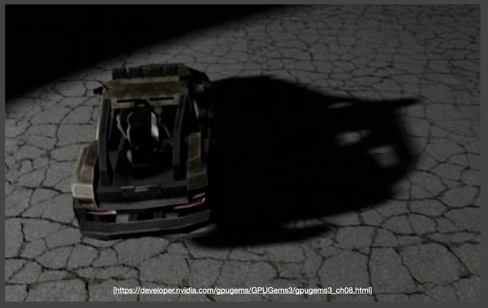
滤波器的大小会影响到滤波效果：滤波器越小，阴影越锐利；滤波器越大，阴影越模糊。于是有人发现当滤波器取得很大时，可以达到近似软阴影的效果。所以我们可以沿这样一条思路生成软阴影：
- 先生成硬阴影
- 采用什么样大小的滤波器比较合适
- 需不需要为不同位置使用相同大小的滤波器
下面这张图是一个很好的例子。观察发现，钢笔的笔尖阴影较硬，笔杆阴影较软，也就是说离纸面越近的部位产生的阴影越硬。

所以我们得到以下关键结论：
- 滤波器的大小和遮挡物的距离(blocker distance)有关
- 更准确地说，是投影后遮挡物的深度的相对平均值
PCSS 的示意图如右侧所示，对应数学上的转换公式为：
注：\(w_{\text{penumbra}}\) 值越大，说明半影区域越大，阴影会更软。
现在就差最后一个问题没解决了：\(d_{\text{blocker}}\) 怎么算？下面就直接给出完整的 PCSS 算法：
-
遮挡物搜索：获取特定区域内遮挡物深度的平均值
- 检查着色点和光源的连线上是否有点处在阴影中，若是则说明该点是遮挡物上一点，于是记录其深度，最后对所有存下来的深度取平均
- 特定区域（下图红色区域）可以是常量，但更好的方法是启发式算法（取决于光源大小和接收者和光源的距离）
- 问题：开销很大

-
半影估计：使用平均遮挡物深度来确定滤波器大小
- 百分比接近滤波
导致上述算法执行变慢的地方有：
- 第 1 步和第 3 步需查看区域内的每个纹素（的深度）
- 加速方法：在区域内进行有限次数的采样，但只是近似结果，带来了更大的噪声（工业界还会采取一些降噪方法以减轻影响）
- 要想实现更「软」的阴影效果，就得设定更大的滤波区域，那么计算量就会更大
例子
可以看到，相比树干部分，树叶对应的阴影的滤波器大小会大一些，从而形成效果不错的软阴影。

A Deeper Look at PCF
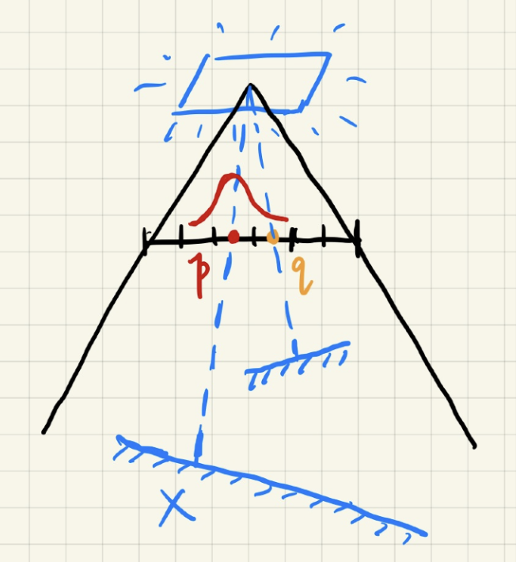
说到滤波，不难想到 PCF 背后的数学知识就是卷积(convolution)：
于是可以得到 PCSS 的公式：
其中：
- \(x\) 为着色点，它的阴影来自 \(p\) 点周围的区域
- \(\chi^+\) 是一个符号函数，当 \(D_{\text{SM}}(q) - D_{\text{scene}}(x) > 0\) 时值为 1，否则值为 0
通过这个公式，我们就能理解之前为什么说
-
PCF != 先对阴影贴图滤波再比较的结果
\[ V(x) \ne \chi^+ \{[w * D_{\text{SM}}](q) - D_{\text{scene}}(x)\} \] -
PCF != 对二元可见性的结果图像进行滤波的结果
\[ V(x) \ne \sum\limits_{q \in \mathcal{N}(p)} w(p, q) V(q) \]
Variance Soft Shadow Mapping
方差软阴影映射(variance soft shadow mapping, VSSM)就是在 PCSS 的基础上加速了第 1 步和第 3 步的计算，实现了更快的遮挡物搜索和滤波。
先来好好理解 PCF 这件事（即 PCSS 的第三步）。「百分比」是指在着色点前面的纹素的比例，即有在搜索区域内有多少纹素比着色点深度 \(t\) 更小。
我们可以用“考试中有多少学生表现比自己好”来类比。为了得到答案，我们往往会根据一张关于成绩的直方图(histogram)来计算：只要找到自己成绩在直方图中的位置就行了。不过，如果只想了解大致的排行情况，也许只要一个关于成绩的分布（通常认为是正态分布）就能完成。

类似地，VSSM 的关键思路便是快速计算区域内关于深度分布的均值(mean)和方差(variance)。具体的计算方式有：
-
均值：
- 硬件 MIPMaping
- 求和面积表(summed area table, SAT)
-
方差：
- \(\text{Var}(X) = E(X^2) - E^2(X)\)
- 所以只需额外计算深度平方的均值
- 也就是说只要生成另一张阴影贴图，记录深度的平方值（不会产生很多额外的开销）
回到前面有关「百分比接近」的讨论。在已经得到均值和方差的基础上，阴影区域的精确解（多少百分比的纹素的深度比着色点的更浅）便是着色点深度在对应正态分布的 CDF（累计分布函数）值（即曲线下方的面积）。
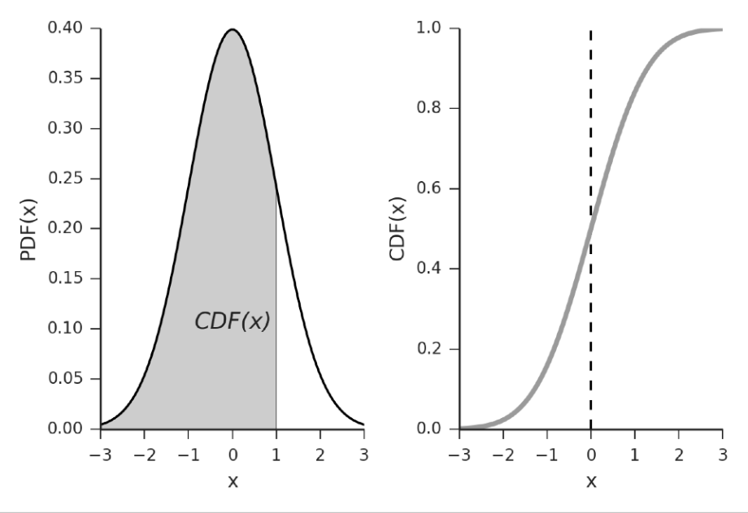
注：对于通用高斯的 PDF，其积分值会被记录在一张表上（打表），这些值被称为误差函数(error function)。这类积分无解析解，但有数值解。
VSSM 并没有这样做。它利用切比雪夫不等式(Chebychev’s inequality)进行近似表示深度比 \(t\) 大的纹素的百分比（上界），这样比计算什么 CDF 简单多了，甚至都不需要知道具体什么分布（但隐含了简单单峰的条件，并在正态分布时最准确）。
要求 \(t > \mu\)
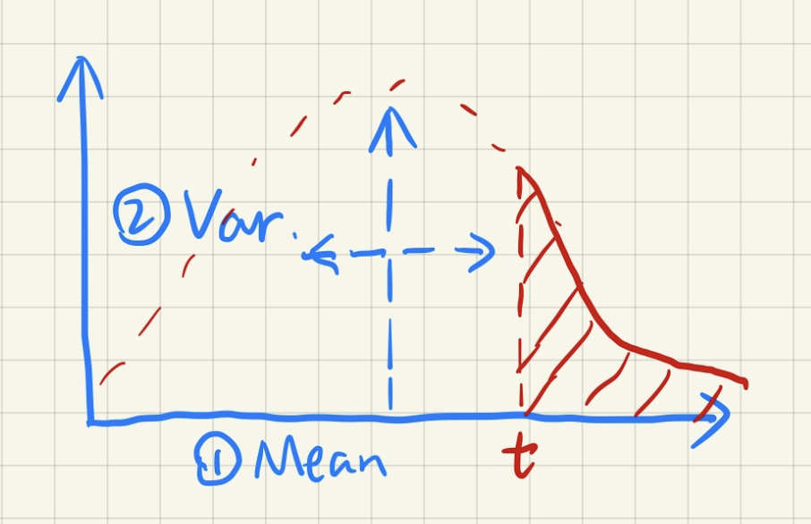
总结一下 VSSM 在第三步中的改进：
- 阴影贴图生成：
- 「平方深度图」：和普通的深度图并行计算，计算量取决于像素个数
- 计算均值：MIPMAP 或 SAT（稍后介绍）
- 运行时：
- 区域内深度和深度平方的均值计算：\(O(1)\)
- 切比雪夫不等式：\(O(1)\)
- 无需任何采样/循环
回到第一步的遮挡物搜索。为了计算遮挡物的平均深度，这一步也存在效率不高的采样/循环操作。需要明确的一点是，遮挡物的深度并不是区域内所有纹素深度的平均值 \(z_{\text{arg}}\)。真正的遮挡物平均深度 \(z\) 是小于 \(t\) 的，因此
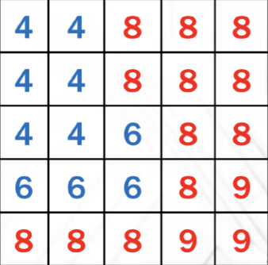
- 遮挡物（\(\textcolor{cornflowerblue}{z < t}\)）深度平均值 \(z_{\text{occ}}\)（我们想要计算的）
- 非遮挡物（\(\textcolor{red}{z > t}\)）深度平均值 \(z_{\text{unocc}}\)
- 显然有公式 \(\dfrac{N_1}{N} z_{\text{unocc}} + \dfrac{N_2}{N} z_{\text{occ}} = z_{\text{avg}}\) 成立
- 可以利用切比雪夫不等式近似计算比例：\(N_1 / N = P(x > t), N_2 / N = 1 - P(x > t)\)
- \(z_{\text{unocc}}\) 也是未知的，但大胆假设 \(z_{\text{unocc}} = t\)（也就是认为阴影的接收者是个平面，当然很多时候也正是如此）
- 完成步骤 1 产生的额外成本可忽略不计
例子

MIPMAP and Summed-Area Variance Shadow Maps
VSSM 中还未讲到的一块是如何加速计算任意范围（深度和深度平方）的均值 \(\mu\) 和方差 \(\sigma\)。不过可以确定的是，范围的形状一定是个矩形(rectangle)。因此可以用 MIPMAP 和 SAT 来解决。
不过 MIPMAP 的局限性较多，比如得到的只是近似结果（即便用了三线性插值（每一级之间还要再做一次 LERP）），且只能处理方形区域。
于是我们转向第二种方法 SAT。它用到了一种很经典的数据结构和算法————前缀和(prefix sum)。SAT 存的就是每个位置的前缀和。有了前缀和后，就能直接计算任意范围的总和，也就相当于求出了均值。
-
1D 情况

-
2D 情况：蓝色区域 = 绿色区域 - 黄色区域
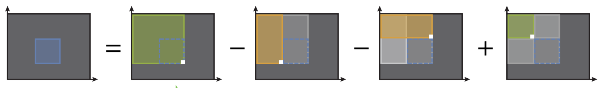
该方法的优点是精确，缺点是需要额外花费 \(O(n)\) 时间和空间进行预计算（\(n\) 理解为所有元素的个数）。存储可能不是问题，关键在于速度。借助 GPU 的能力，可以实现并行加速。
Moment Shadow Mapping
虽然 VSSM 是为了解决 PCSS 的问题而诞生的，但它自身也有一定的局限性。首先它假设区域内纹素在着色点之前的占比与深度差呈正态分布。光照在复杂物体（比如左图的树枝）产生的投影确实可以近似为正态分布，但假如光照在像右图那种钻洞的网格上，对应的分布可能存在多个峰值。

如果深度分布描述得不够准确，可能会带来一系列问题：
- 过暗（高估遮挡物占比）：可能会被接受（毕竟阴影再暗也是阴影，不会感觉特别突兀）
- 过亮（低估遮挡物占比，如下图所示）：漏光(light leaking)（显然人们无法接受阴影中有块地方变白了）

例子
可以看到车底的阴影存在漏光现象，因为车的底盘、天窗等部分的深度分布不会是正态分布。
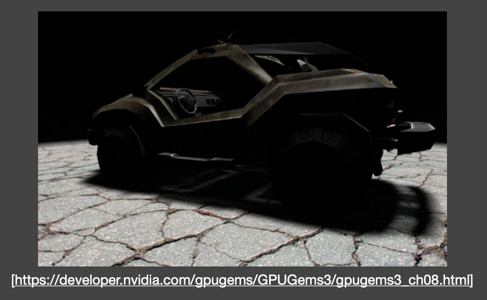
除了漏光问题外，VSSM 还会导致非平面物体上的阴影上的瑕疵，比如下图中阴影断裂的问题。因为只有当 \(t > z_{\text{avg}}\) 时，切比雪夫不等式才是有效的。

为了更准确地表示分布（但仍然不能在存储上消耗太多），我们引入了更加先进的矩阴影映射(moment shadow mapping)，它的思路是使用高阶矩(higher order moments)来表示分布。
矩(moment)
矩有许多不同版本的定义，我们就用其中最简单的：\(x, x^2, x^3, x^4, \dots\)。而 VSSM 本质上用的就是矩的前两阶。
矩的作用是：前 \(m\) 阶的矩能用 \(\dfrac{m}{2}\) 步表示一个函数。通常而言，\(m = 4\) 足以近似表示深度分布的 CDF，如图所示。
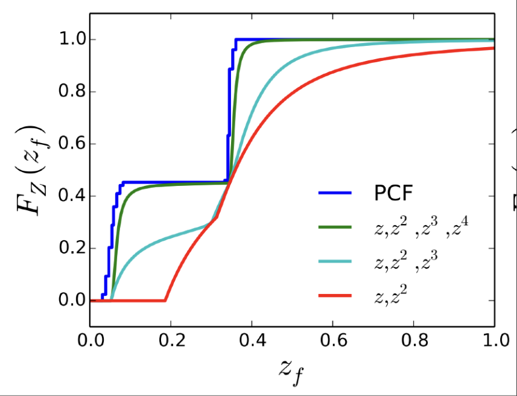
矩阴影映射的做法和 VSSM 极其相似，但它要生成关于 \(z, z^2, z^3, z^4\) 的阴影贴图（4 张），并在执行遮挡物搜索和 PCF 期间恢复 CDF。
优点：能产生非常好的结果。
缺点
- 存储开销大（或许可以接受）
- 影响到性能（在重建过程中）

Distance Field Soft Shadows
例子（距离场软阴影的效果）
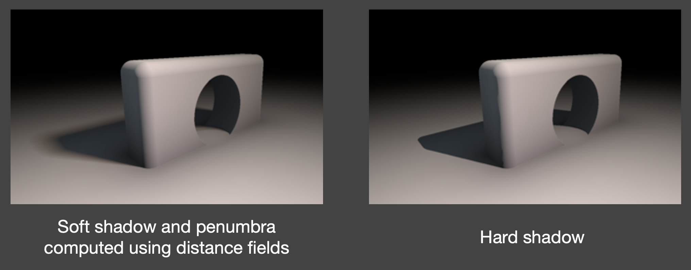
Distance Function
先来回顾一下距离函数(distance functions)的概念。它是指在任何时刻给出到物体上最近位置的最小距离（可以是带符号的距离）。比如对于下图的字母 A，距离函数便是点到字母轮廓的最近距离，并且右图以可视化的方式呈现计算结果。
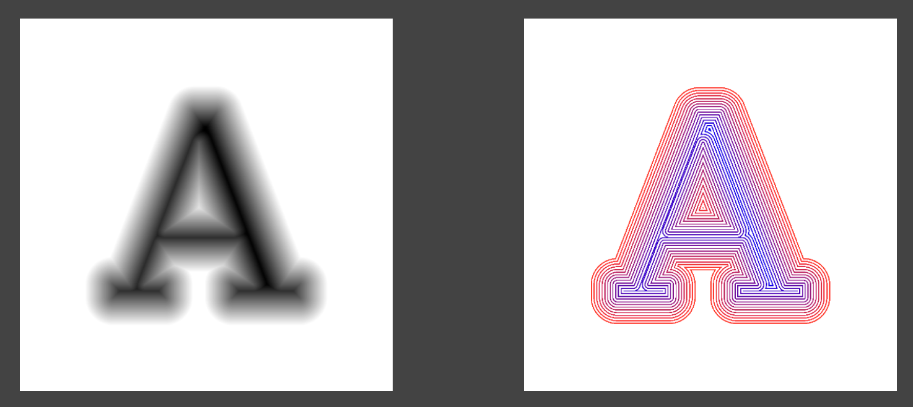
例子（对移动边界进行混合（线性插值））
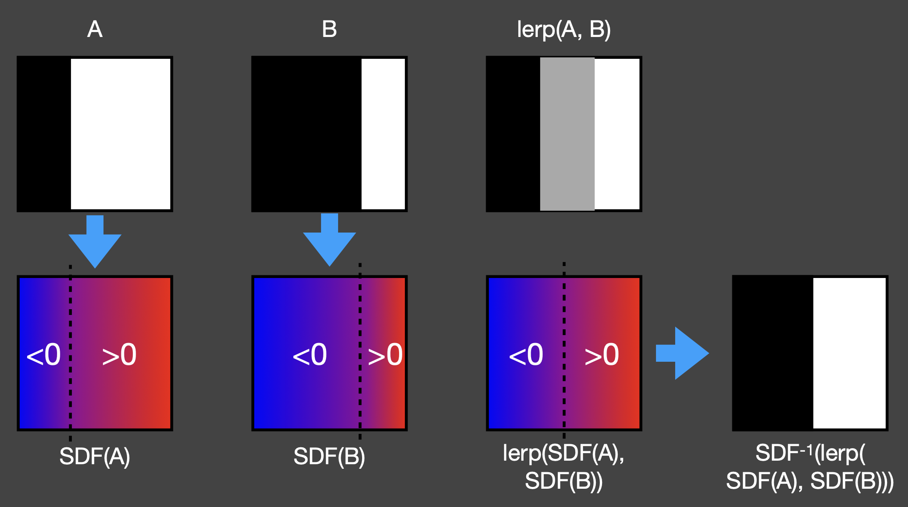
- SDF == 0 => 边界
- 可以看到，如果只是简单的线性插值，只能得到中间的灰色区域，而不会产生新的黑白边界
- 但如果是对两幅图的 SDF 进行线性插值，还原后的图像的中间就有明显的边界了
实际上可以通过混合任意两个距离函数 d1, d2 来混合任意形状的物体：
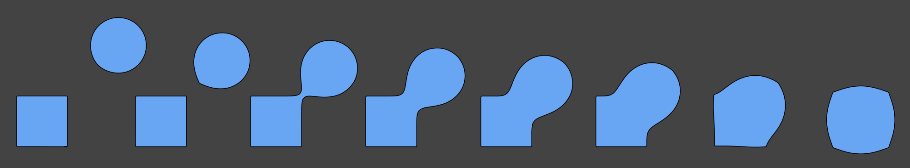
注
SDF 和最优传输(optimal transport)理论密切相关，建议课后学习一下。
The Usages of Distance Fields
距离场的用途有：
-
通过光线行进(ray marching)（球体追踪(sphere tracing)）来执行光线和 SDF 的求交计算(ray-SDF intersection)
- 背后蕴含了一个非常聪明的思想：SDF 的值 == 周围的「安全」距离
- 因此每次在点 p 处只需行进 SDF(p) 的距离，这样保证不会和任何物体相交
- 当 SDF 小到一定程度后（也就是说离物体足够接近时），或者行进很长一段距离后还是没有碰到物体时停止行进
- 可以处理运动的物体，但不适合用在有能产生形变的物体的场景中（需根据形变程度重新计算）
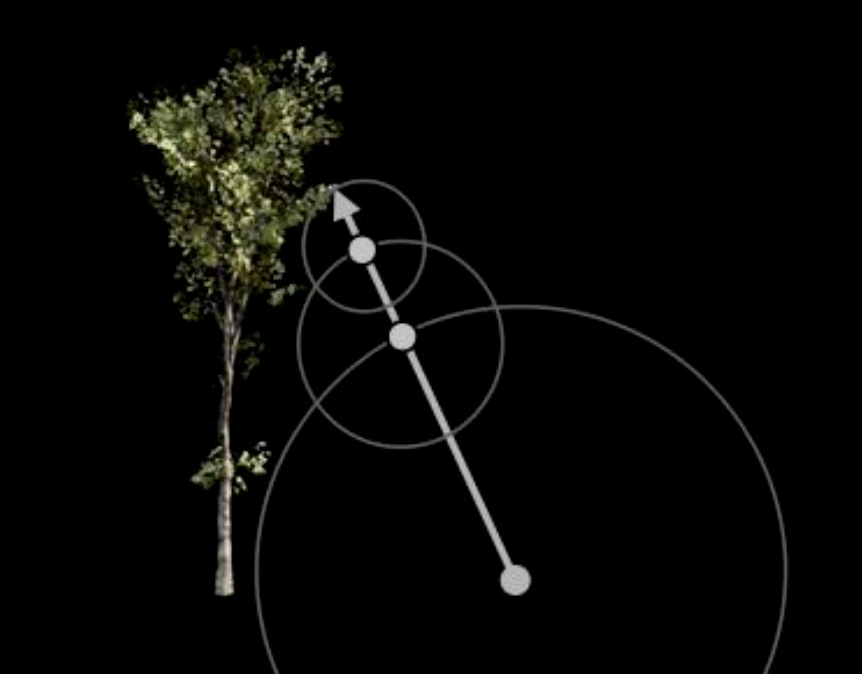
-
使用 SDF 确定（近似的）遮挡百分比(percentage of occlusion)
- SDF 的值 == 眼睛看到的「安全」角度
- 观察：更小的安全角度 <-> 更小的可见性
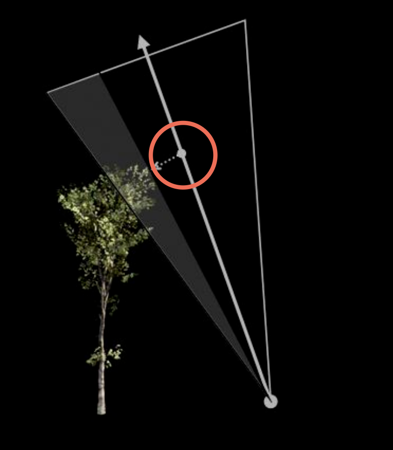
Distance Field Soft Shadows
现在正式来看如何计算距离场软阴影：在光线行进阶段的每一步中计算来自眼睛的「安全」角度，并保留最小值。
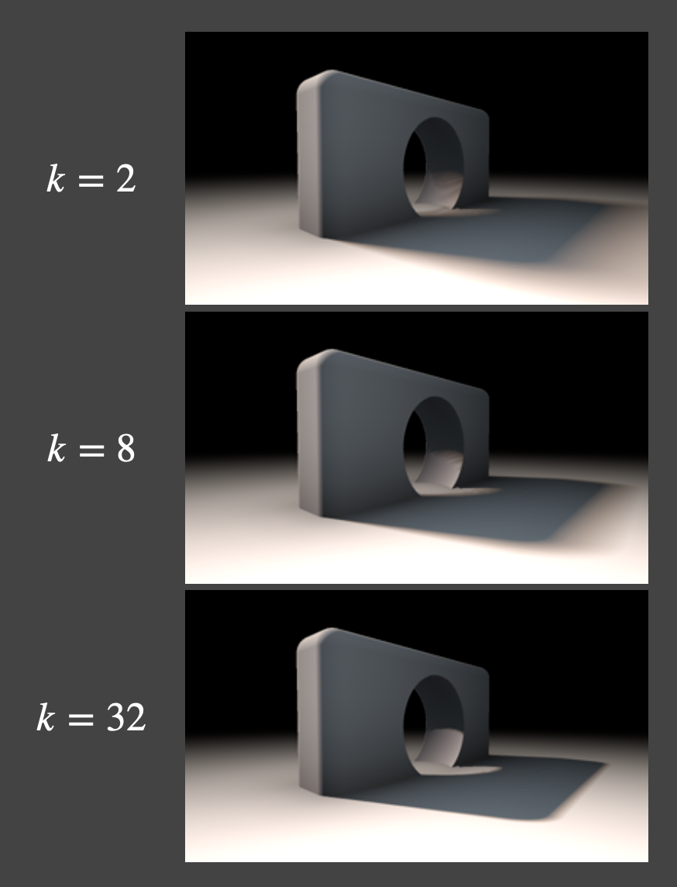
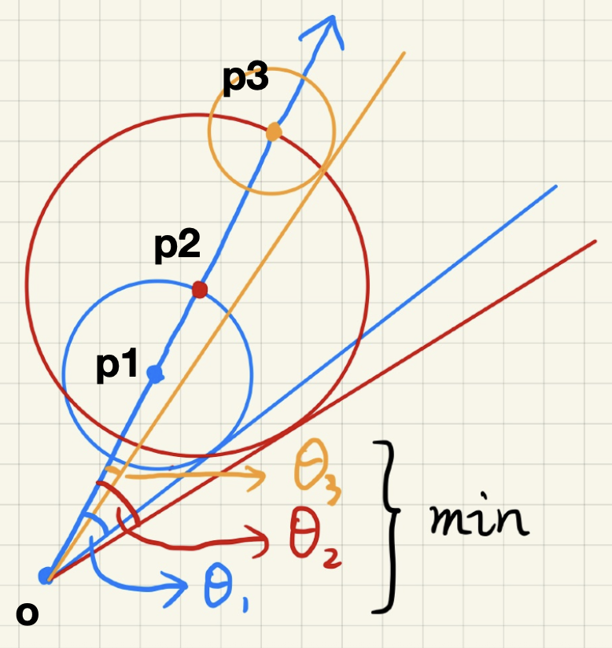
也许读者会想利用圆的切线来求解安全角度，这样的话计算公式便是 \(\arcsin \dfrac{\text{SDF}(p)}{p - o}\)。但在着色阶段中，人们通常希望能避免像反三角函数这样复杂的计算。因此实际上会用这个公式来算：\(\min\left\{ \dfrac{k \cdot \text{SDF}(p)}{p - o}, 1.0 \right\}\)。
- \(\dfrac{k \cdot \text{SDF}(p)}{p - o}\) 用于近似表示反三角函数，加上 \(\min\) 使该值不超过 1
- \(k\) 值越大，意味着安全角度很大，半影将更早被裁剪，因而让阴影变得更硬
距离场的可视化结果
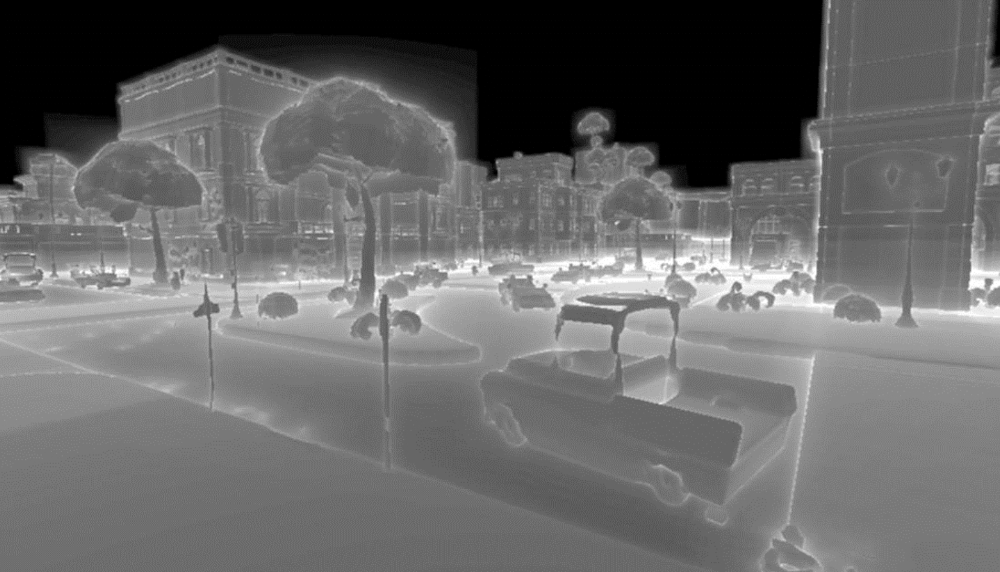
优点
-
快速
- 应该说生成 SDF 比生成阴影贴图更快，运行时查询的时候两者速度应该差不多
-
高质量
缺点
- 需要预计算
-
需要大量存储，不过也有一些缓解措施
- 使用 KD 树、八叉树等对空间划分，只去计算场景中较近区域的 SDF
- 有人尝试过用深度学习方法压缩，但这样做反而增加解压的时间，因此不太可能在实际中得到应用
-
接缝处可能存在瑕疵
一个有趣的应用
在 RTR 中实现了抗锯齿/无限分辨率的字符。
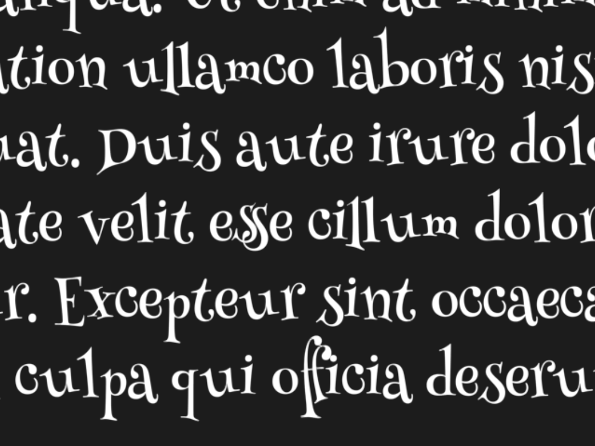
GitHub 链接：https://github.com/protectwise/troika/tree/master/packages/troika-three-text
评论区